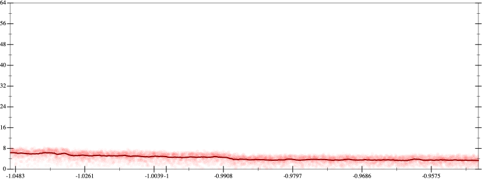
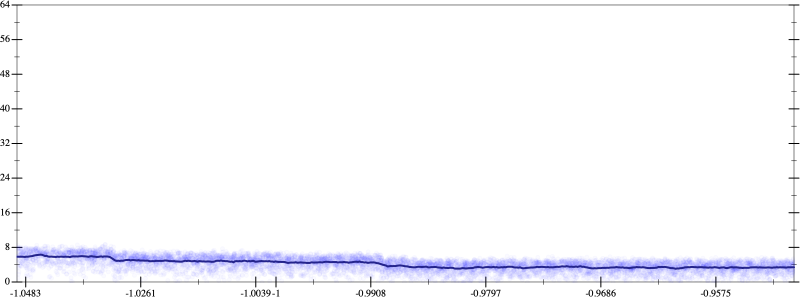
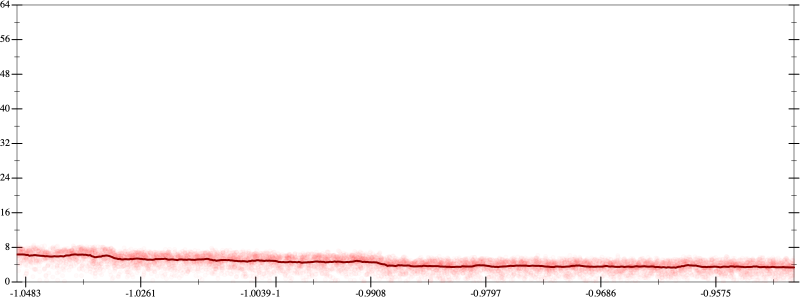
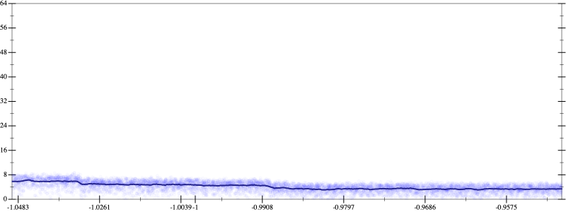

Initial program 4.4
\[\left(\left(\left(\left(\left(\left(\left(17643225600.0 \cdot x + -94097203200.0 \cdot \left(\left(x \cdot x\right) \cdot x\right)\right) + 131736084480.0 \cdot \left(\left(\left(\left(x \cdot x\right) \cdot x\right) \cdot x\right) \cdot x\right)\right) + -75277762560.0 \cdot \left(\left(\left(\left(\left(\left(x \cdot x\right) \cdot x\right) \cdot x\right) \cdot x\right) \cdot x\right) \cdot x\right)\right) + 20910489600.0 \cdot \left(\left(\left(\left(\left(\left(\left(\left(x \cdot x\right) \cdot x\right) \cdot x\right) \cdot x\right) \cdot x\right) \cdot x\right) \cdot x\right) \cdot x\right)\right) + -3041525760.0 \cdot \left(\left(\left(\left(\left(\left(\left(\left(\left(\left(x \cdot x\right) \cdot x\right) \cdot x\right) \cdot x\right) \cdot x\right) \cdot x\right) \cdot x\right) \cdot x\right) \cdot x\right) \cdot x\right)\right) + 233963520.0 \cdot \left(\left(\left(\left(\left(\left(\left(\left(\left(\left(\left(\left(x \cdot x\right) \cdot x\right) \cdot x\right) \cdot x\right) \cdot x\right) \cdot x\right) \cdot x\right) \cdot x\right) \cdot x\right) \cdot x\right) \cdot x\right) \cdot x\right)\right) + -8912896.0 \cdot \left(\left(\left(\left(\left(\left(\left(\left(\left(\left(\left(\left(\left(\left(x \cdot x\right) \cdot x\right) \cdot x\right) \cdot x\right) \cdot x\right) \cdot x\right) \cdot x\right) \cdot x\right) \cdot x\right) \cdot x\right) \cdot x\right) \cdot x\right) \cdot x\right) \cdot x\right)\right) + 131072.0 \cdot \left(\left(\left(\left(\left(\left(\left(\left(\left(\left(\left(\left(\left(\left(\left(\left(x \cdot x\right) \cdot x\right) \cdot x\right) \cdot x\right) \cdot x\right) \cdot x\right) \cdot x\right) \cdot x\right) \cdot x\right) \cdot x\right) \cdot x\right) \cdot x\right) \cdot x\right) \cdot x\right) \cdot x\right) \cdot x\right)\]
- Using strategy
rm Applied flip-+4.4
\[\leadsto \left(\left(\left(\left(\color{blue}{\frac{\left(\left(17643225600.0 \cdot x + -94097203200.0 \cdot \left(\left(x \cdot x\right) \cdot x\right)\right) + 131736084480.0 \cdot \left(\left(\left(\left(x \cdot x\right) \cdot x\right) \cdot x\right) \cdot x\right)\right) \cdot \left(\left(17643225600.0 \cdot x + -94097203200.0 \cdot \left(\left(x \cdot x\right) \cdot x\right)\right) + 131736084480.0 \cdot \left(\left(\left(\left(x \cdot x\right) \cdot x\right) \cdot x\right) \cdot x\right)\right) - \left(-75277762560.0 \cdot \left(\left(\left(\left(\left(\left(x \cdot x\right) \cdot x\right) \cdot x\right) \cdot x\right) \cdot x\right) \cdot x\right)\right) \cdot \left(-75277762560.0 \cdot \left(\left(\left(\left(\left(\left(x \cdot x\right) \cdot x\right) \cdot x\right) \cdot x\right) \cdot x\right) \cdot x\right)\right)}{\left(\left(17643225600.0 \cdot x + -94097203200.0 \cdot \left(\left(x \cdot x\right) \cdot x\right)\right) + 131736084480.0 \cdot \left(\left(\left(\left(x \cdot x\right) \cdot x\right) \cdot x\right) \cdot x\right)\right) - -75277762560.0 \cdot \left(\left(\left(\left(\left(\left(x \cdot x\right) \cdot x\right) \cdot x\right) \cdot x\right) \cdot x\right) \cdot x\right)}} + 20910489600.0 \cdot \left(\left(\left(\left(\left(\left(\left(\left(x \cdot x\right) \cdot x\right) \cdot x\right) \cdot x\right) \cdot x\right) \cdot x\right) \cdot x\right) \cdot x\right)\right) + -3041525760.0 \cdot \left(\left(\left(\left(\left(\left(\left(\left(\left(\left(x \cdot x\right) \cdot x\right) \cdot x\right) \cdot x\right) \cdot x\right) \cdot x\right) \cdot x\right) \cdot x\right) \cdot x\right) \cdot x\right)\right) + 233963520.0 \cdot \left(\left(\left(\left(\left(\left(\left(\left(\left(\left(\left(\left(x \cdot x\right) \cdot x\right) \cdot x\right) \cdot x\right) \cdot x\right) \cdot x\right) \cdot x\right) \cdot x\right) \cdot x\right) \cdot x\right) \cdot x\right) \cdot x\right)\right) + -8912896.0 \cdot \left(\left(\left(\left(\left(\left(\left(\left(\left(\left(\left(\left(\left(\left(x \cdot x\right) \cdot x\right) \cdot x\right) \cdot x\right) \cdot x\right) \cdot x\right) \cdot x\right) \cdot x\right) \cdot x\right) \cdot x\right) \cdot x\right) \cdot x\right) \cdot x\right) \cdot x\right)\right) + 131072.0 \cdot \left(\left(\left(\left(\left(\left(\left(\left(\left(\left(\left(\left(\left(\left(\left(\left(x \cdot x\right) \cdot x\right) \cdot x\right) \cdot x\right) \cdot x\right) \cdot x\right) \cdot x\right) \cdot x\right) \cdot x\right) \cdot x\right) \cdot x\right) \cdot x\right) \cdot x\right) \cdot x\right) \cdot x\right) \cdot x\right)\]
Applied simplify4.3
\[\leadsto \left(\left(\left(\left(\frac{\left(\left(17643225600.0 \cdot x + -94097203200.0 \cdot \left(\left(x \cdot x\right) \cdot x\right)\right) + 131736084480.0 \cdot \left(\left(\left(\left(x \cdot x\right) \cdot x\right) \cdot x\right) \cdot x\right)\right) \cdot \left(\left(17643225600.0 \cdot x + -94097203200.0 \cdot \left(\left(x \cdot x\right) \cdot x\right)\right) + 131736084480.0 \cdot \left(\left(\left(\left(x \cdot x\right) \cdot x\right) \cdot x\right) \cdot x\right)\right) - \left(-75277762560.0 \cdot \left(\left(\left(\left(\left(\left(x \cdot x\right) \cdot x\right) \cdot x\right) \cdot x\right) \cdot x\right) \cdot x\right)\right) \cdot \left(-75277762560.0 \cdot \left(\left(\left(\left(\left(\left(x \cdot x\right) \cdot x\right) \cdot x\right) \cdot x\right) \cdot x\right) \cdot x\right)\right)}{\color{blue}{\left(\left(x \cdot x\right) \cdot \left(x \cdot x\right)\right) \cdot \left(x \cdot 131736084480.0 - \left(-75277762560.0 \cdot x\right) \cdot \left(x \cdot x\right)\right) + \left(17643225600.0 \cdot x + \left(-94097203200.0 \cdot x\right) \cdot \left(x \cdot x\right)\right)}} + 20910489600.0 \cdot \left(\left(\left(\left(\left(\left(\left(\left(x \cdot x\right) \cdot x\right) \cdot x\right) \cdot x\right) \cdot x\right) \cdot x\right) \cdot x\right) \cdot x\right)\right) + -3041525760.0 \cdot \left(\left(\left(\left(\left(\left(\left(\left(\left(\left(x \cdot x\right) \cdot x\right) \cdot x\right) \cdot x\right) \cdot x\right) \cdot x\right) \cdot x\right) \cdot x\right) \cdot x\right) \cdot x\right)\right) + 233963520.0 \cdot \left(\left(\left(\left(\left(\left(\left(\left(\left(\left(\left(\left(x \cdot x\right) \cdot x\right) \cdot x\right) \cdot x\right) \cdot x\right) \cdot x\right) \cdot x\right) \cdot x\right) \cdot x\right) \cdot x\right) \cdot x\right) \cdot x\right)\right) + -8912896.0 \cdot \left(\left(\left(\left(\left(\left(\left(\left(\left(\left(\left(\left(\left(\left(x \cdot x\right) \cdot x\right) \cdot x\right) \cdot x\right) \cdot x\right) \cdot x\right) \cdot x\right) \cdot x\right) \cdot x\right) \cdot x\right) \cdot x\right) \cdot x\right) \cdot x\right) \cdot x\right)\right) + 131072.0 \cdot \left(\left(\left(\left(\left(\left(\left(\left(\left(\left(\left(\left(\left(\left(\left(\left(x \cdot x\right) \cdot x\right) \cdot x\right) \cdot x\right) \cdot x\right) \cdot x\right) \cdot x\right) \cdot x\right) \cdot x\right) \cdot x\right) \cdot x\right) \cdot x\right) \cdot x\right) \cdot x\right) \cdot x\right) \cdot x\right)\]
- Using strategy
rm Applied associate-+l+4.3
\[\leadsto \left(\left(\left(\left(\frac{\left(\left(17643225600.0 \cdot x + -94097203200.0 \cdot \left(\left(x \cdot x\right) \cdot x\right)\right) + 131736084480.0 \cdot \left(\left(\left(\left(x \cdot x\right) \cdot x\right) \cdot x\right) \cdot x\right)\right) \cdot \color{blue}{\left(17643225600.0 \cdot x + \left(-94097203200.0 \cdot \left(\left(x \cdot x\right) \cdot x\right) + 131736084480.0 \cdot \left(\left(\left(\left(x \cdot x\right) \cdot x\right) \cdot x\right) \cdot x\right)\right)\right)} - \left(-75277762560.0 \cdot \left(\left(\left(\left(\left(\left(x \cdot x\right) \cdot x\right) \cdot x\right) \cdot x\right) \cdot x\right) \cdot x\right)\right) \cdot \left(-75277762560.0 \cdot \left(\left(\left(\left(\left(\left(x \cdot x\right) \cdot x\right) \cdot x\right) \cdot x\right) \cdot x\right) \cdot x\right)\right)}{\left(\left(x \cdot x\right) \cdot \left(x \cdot x\right)\right) \cdot \left(x \cdot 131736084480.0 - \left(-75277762560.0 \cdot x\right) \cdot \left(x \cdot x\right)\right) + \left(17643225600.0 \cdot x + \left(-94097203200.0 \cdot x\right) \cdot \left(x \cdot x\right)\right)} + 20910489600.0 \cdot \left(\left(\left(\left(\left(\left(\left(\left(x \cdot x\right) \cdot x\right) \cdot x\right) \cdot x\right) \cdot x\right) \cdot x\right) \cdot x\right) \cdot x\right)\right) + -3041525760.0 \cdot \left(\left(\left(\left(\left(\left(\left(\left(\left(\left(x \cdot x\right) \cdot x\right) \cdot x\right) \cdot x\right) \cdot x\right) \cdot x\right) \cdot x\right) \cdot x\right) \cdot x\right) \cdot x\right)\right) + 233963520.0 \cdot \left(\left(\left(\left(\left(\left(\left(\left(\left(\left(\left(\left(x \cdot x\right) \cdot x\right) \cdot x\right) \cdot x\right) \cdot x\right) \cdot x\right) \cdot x\right) \cdot x\right) \cdot x\right) \cdot x\right) \cdot x\right) \cdot x\right)\right) + -8912896.0 \cdot \left(\left(\left(\left(\left(\left(\left(\left(\left(\left(\left(\left(\left(\left(x \cdot x\right) \cdot x\right) \cdot x\right) \cdot x\right) \cdot x\right) \cdot x\right) \cdot x\right) \cdot x\right) \cdot x\right) \cdot x\right) \cdot x\right) \cdot x\right) \cdot x\right) \cdot x\right)\right) + 131072.0 \cdot \left(\left(\left(\left(\left(\left(\left(\left(\left(\left(\left(\left(\left(\left(\left(\left(x \cdot x\right) \cdot x\right) \cdot x\right) \cdot x\right) \cdot x\right) \cdot x\right) \cdot x\right) \cdot x\right) \cdot x\right) \cdot x\right) \cdot x\right) \cdot x\right) \cdot x\right) \cdot x\right) \cdot x\right) \cdot x\right)\]
Applied simplify4.2
\[\leadsto \left(\left(\left(\left(\frac{\left(\left(17643225600.0 \cdot x + -94097203200.0 \cdot \left(\left(x \cdot x\right) \cdot x\right)\right) + 131736084480.0 \cdot \left(\left(\left(\left(x \cdot x\right) \cdot x\right) \cdot x\right) \cdot x\right)\right) \cdot \left(17643225600.0 \cdot x + \color{blue}{\left(\left(131736084480.0 \cdot x\right) \cdot \left(x \cdot x\right) + -94097203200.0 \cdot x\right) \cdot \left(x \cdot x\right)}\right) - \left(-75277762560.0 \cdot \left(\left(\left(\left(\left(\left(x \cdot x\right) \cdot x\right) \cdot x\right) \cdot x\right) \cdot x\right) \cdot x\right)\right) \cdot \left(-75277762560.0 \cdot \left(\left(\left(\left(\left(\left(x \cdot x\right) \cdot x\right) \cdot x\right) \cdot x\right) \cdot x\right) \cdot x\right)\right)}{\left(\left(x \cdot x\right) \cdot \left(x \cdot x\right)\right) \cdot \left(x \cdot 131736084480.0 - \left(-75277762560.0 \cdot x\right) \cdot \left(x \cdot x\right)\right) + \left(17643225600.0 \cdot x + \left(-94097203200.0 \cdot x\right) \cdot \left(x \cdot x\right)\right)} + 20910489600.0 \cdot \left(\left(\left(\left(\left(\left(\left(\left(x \cdot x\right) \cdot x\right) \cdot x\right) \cdot x\right) \cdot x\right) \cdot x\right) \cdot x\right) \cdot x\right)\right) + -3041525760.0 \cdot \left(\left(\left(\left(\left(\left(\left(\left(\left(\left(x \cdot x\right) \cdot x\right) \cdot x\right) \cdot x\right) \cdot x\right) \cdot x\right) \cdot x\right) \cdot x\right) \cdot x\right) \cdot x\right)\right) + 233963520.0 \cdot \left(\left(\left(\left(\left(\left(\left(\left(\left(\left(\left(\left(x \cdot x\right) \cdot x\right) \cdot x\right) \cdot x\right) \cdot x\right) \cdot x\right) \cdot x\right) \cdot x\right) \cdot x\right) \cdot x\right) \cdot x\right) \cdot x\right)\right) + -8912896.0 \cdot \left(\left(\left(\left(\left(\left(\left(\left(\left(\left(\left(\left(\left(\left(x \cdot x\right) \cdot x\right) \cdot x\right) \cdot x\right) \cdot x\right) \cdot x\right) \cdot x\right) \cdot x\right) \cdot x\right) \cdot x\right) \cdot x\right) \cdot x\right) \cdot x\right) \cdot x\right)\right) + 131072.0 \cdot \left(\left(\left(\left(\left(\left(\left(\left(\left(\left(\left(\left(\left(\left(\left(\left(x \cdot x\right) \cdot x\right) \cdot x\right) \cdot x\right) \cdot x\right) \cdot x\right) \cdot x\right) \cdot x\right) \cdot x\right) \cdot x\right) \cdot x\right) \cdot x\right) \cdot x\right) \cdot x\right) \cdot x\right) \cdot x\right)\]
- Using strategy
rm Applied flip-+4.2
\[\leadsto \left(\left(\left(\color{blue}{\frac{\frac{\left(\left(17643225600.0 \cdot x + -94097203200.0 \cdot \left(\left(x \cdot x\right) \cdot x\right)\right) + 131736084480.0 \cdot \left(\left(\left(\left(x \cdot x\right) \cdot x\right) \cdot x\right) \cdot x\right)\right) \cdot \left(17643225600.0 \cdot x + \left(\left(131736084480.0 \cdot x\right) \cdot \left(x \cdot x\right) + -94097203200.0 \cdot x\right) \cdot \left(x \cdot x\right)\right) - \left(-75277762560.0 \cdot \left(\left(\left(\left(\left(\left(x \cdot x\right) \cdot x\right) \cdot x\right) \cdot x\right) \cdot x\right) \cdot x\right)\right) \cdot \left(-75277762560.0 \cdot \left(\left(\left(\left(\left(\left(x \cdot x\right) \cdot x\right) \cdot x\right) \cdot x\right) \cdot x\right) \cdot x\right)\right)}{\left(\left(x \cdot x\right) \cdot \left(x \cdot x\right)\right) \cdot \left(x \cdot 131736084480.0 - \left(-75277762560.0 \cdot x\right) \cdot \left(x \cdot x\right)\right) + \left(17643225600.0 \cdot x + \left(-94097203200.0 \cdot x\right) \cdot \left(x \cdot x\right)\right)} \cdot \frac{\left(\left(17643225600.0 \cdot x + -94097203200.0 \cdot \left(\left(x \cdot x\right) \cdot x\right)\right) + 131736084480.0 \cdot \left(\left(\left(\left(x \cdot x\right) \cdot x\right) \cdot x\right) \cdot x\right)\right) \cdot \left(17643225600.0 \cdot x + \left(\left(131736084480.0 \cdot x\right) \cdot \left(x \cdot x\right) + -94097203200.0 \cdot x\right) \cdot \left(x \cdot x\right)\right) - \left(-75277762560.0 \cdot \left(\left(\left(\left(\left(\left(x \cdot x\right) \cdot x\right) \cdot x\right) \cdot x\right) \cdot x\right) \cdot x\right)\right) \cdot \left(-75277762560.0 \cdot \left(\left(\left(\left(\left(\left(x \cdot x\right) \cdot x\right) \cdot x\right) \cdot x\right) \cdot x\right) \cdot x\right)\right)}{\left(\left(x \cdot x\right) \cdot \left(x \cdot x\right)\right) \cdot \left(x \cdot 131736084480.0 - \left(-75277762560.0 \cdot x\right) \cdot \left(x \cdot x\right)\right) + \left(17643225600.0 \cdot x + \left(-94097203200.0 \cdot x\right) \cdot \left(x \cdot x\right)\right)} - \left(20910489600.0 \cdot \left(\left(\left(\left(\left(\left(\left(\left(x \cdot x\right) \cdot x\right) \cdot x\right) \cdot x\right) \cdot x\right) \cdot x\right) \cdot x\right) \cdot x\right)\right) \cdot \left(20910489600.0 \cdot \left(\left(\left(\left(\left(\left(\left(\left(x \cdot x\right) \cdot x\right) \cdot x\right) \cdot x\right) \cdot x\right) \cdot x\right) \cdot x\right) \cdot x\right)\right)}{\frac{\left(\left(17643225600.0 \cdot x + -94097203200.0 \cdot \left(\left(x \cdot x\right) \cdot x\right)\right) + 131736084480.0 \cdot \left(\left(\left(\left(x \cdot x\right) \cdot x\right) \cdot x\right) \cdot x\right)\right) \cdot \left(17643225600.0 \cdot x + \left(\left(131736084480.0 \cdot x\right) \cdot \left(x \cdot x\right) + -94097203200.0 \cdot x\right) \cdot \left(x \cdot x\right)\right) - \left(-75277762560.0 \cdot \left(\left(\left(\left(\left(\left(x \cdot x\right) \cdot x\right) \cdot x\right) \cdot x\right) \cdot x\right) \cdot x\right)\right) \cdot \left(-75277762560.0 \cdot \left(\left(\left(\left(\left(\left(x \cdot x\right) \cdot x\right) \cdot x\right) \cdot x\right) \cdot x\right) \cdot x\right)\right)}{\left(\left(x \cdot x\right) \cdot \left(x \cdot x\right)\right) \cdot \left(x \cdot 131736084480.0 - \left(-75277762560.0 \cdot x\right) \cdot \left(x \cdot x\right)\right) + \left(17643225600.0 \cdot x + \left(-94097203200.0 \cdot x\right) \cdot \left(x \cdot x\right)\right)} - 20910489600.0 \cdot \left(\left(\left(\left(\left(\left(\left(\left(x \cdot x\right) \cdot x\right) \cdot x\right) \cdot x\right) \cdot x\right) \cdot x\right) \cdot x\right) \cdot x\right)}} + -3041525760.0 \cdot \left(\left(\left(\left(\left(\left(\left(\left(\left(\left(x \cdot x\right) \cdot x\right) \cdot x\right) \cdot x\right) \cdot x\right) \cdot x\right) \cdot x\right) \cdot x\right) \cdot x\right) \cdot x\right)\right) + 233963520.0 \cdot \left(\left(\left(\left(\left(\left(\left(\left(\left(\left(\left(\left(x \cdot x\right) \cdot x\right) \cdot x\right) \cdot x\right) \cdot x\right) \cdot x\right) \cdot x\right) \cdot x\right) \cdot x\right) \cdot x\right) \cdot x\right) \cdot x\right)\right) + -8912896.0 \cdot \left(\left(\left(\left(\left(\left(\left(\left(\left(\left(\left(\left(\left(\left(x \cdot x\right) \cdot x\right) \cdot x\right) \cdot x\right) \cdot x\right) \cdot x\right) \cdot x\right) \cdot x\right) \cdot x\right) \cdot x\right) \cdot x\right) \cdot x\right) \cdot x\right) \cdot x\right)\right) + 131072.0 \cdot \left(\left(\left(\left(\left(\left(\left(\left(\left(\left(\left(\left(\left(\left(\left(\left(x \cdot x\right) \cdot x\right) \cdot x\right) \cdot x\right) \cdot x\right) \cdot x\right) \cdot x\right) \cdot x\right) \cdot x\right) \cdot x\right) \cdot x\right) \cdot x\right) \cdot x\right) \cdot x\right) \cdot x\right) \cdot x\right)\]
Applied simplify4.2
\[\leadsto \left(\left(\left(\frac{\frac{\left(\left(17643225600.0 \cdot x + -94097203200.0 \cdot \left(\left(x \cdot x\right) \cdot x\right)\right) + 131736084480.0 \cdot \left(\left(\left(\left(x \cdot x\right) \cdot x\right) \cdot x\right) \cdot x\right)\right) \cdot \left(17643225600.0 \cdot x + \left(\left(131736084480.0 \cdot x\right) \cdot \left(x \cdot x\right) + -94097203200.0 \cdot x\right) \cdot \left(x \cdot x\right)\right) - \left(-75277762560.0 \cdot \left(\left(\left(\left(\left(\left(x \cdot x\right) \cdot x\right) \cdot x\right) \cdot x\right) \cdot x\right) \cdot x\right)\right) \cdot \left(-75277762560.0 \cdot \left(\left(\left(\left(\left(\left(x \cdot x\right) \cdot x\right) \cdot x\right) \cdot x\right) \cdot x\right) \cdot x\right)\right)}{\left(\left(x \cdot x\right) \cdot \left(x \cdot x\right)\right) \cdot \left(x \cdot 131736084480.0 - \left(-75277762560.0 \cdot x\right) \cdot \left(x \cdot x\right)\right) + \left(17643225600.0 \cdot x + \left(-94097203200.0 \cdot x\right) \cdot \left(x \cdot x\right)\right)} \cdot \frac{\left(\left(17643225600.0 \cdot x + -94097203200.0 \cdot \left(\left(x \cdot x\right) \cdot x\right)\right) + 131736084480.0 \cdot \left(\left(\left(\left(x \cdot x\right) \cdot x\right) \cdot x\right) \cdot x\right)\right) \cdot \left(17643225600.0 \cdot x + \left(\left(131736084480.0 \cdot x\right) \cdot \left(x \cdot x\right) + -94097203200.0 \cdot x\right) \cdot \left(x \cdot x\right)\right) - \left(-75277762560.0 \cdot \left(\left(\left(\left(\left(\left(x \cdot x\right) \cdot x\right) \cdot x\right) \cdot x\right) \cdot x\right) \cdot x\right)\right) \cdot \left(-75277762560.0 \cdot \left(\left(\left(\left(\left(\left(x \cdot x\right) \cdot x\right) \cdot x\right) \cdot x\right) \cdot x\right) \cdot x\right)\right)}{\left(\left(x \cdot x\right) \cdot \left(x \cdot x\right)\right) \cdot \left(x \cdot 131736084480.0 - \left(-75277762560.0 \cdot x\right) \cdot \left(x \cdot x\right)\right) + \left(17643225600.0 \cdot x + \left(-94097203200.0 \cdot x\right) \cdot \left(x \cdot x\right)\right)} - \left(20910489600.0 \cdot \left(\left(\left(\left(\left(\left(\left(\left(x \cdot x\right) \cdot x\right) \cdot x\right) \cdot x\right) \cdot x\right) \cdot x\right) \cdot x\right) \cdot x\right)\right) \cdot \left(20910489600.0 \cdot \left(\left(\left(\left(\left(\left(\left(\left(x \cdot x\right) \cdot x\right) \cdot x\right) \cdot x\right) \cdot x\right) \cdot x\right) \cdot x\right) \cdot x\right)\right)}{\color{blue}{\left({x}^{3} \cdot {x}^{3}\right) \cdot \left({x}^{3} \cdot \left(-20910489600.0\right)\right) + \frac{\left(\left(x \cdot 131736084480.0\right) \cdot \left(\left(x \cdot x\right) \cdot \left(x \cdot x\right)\right) + \left(17643225600.0 \cdot x + \left(-94097203200.0 \cdot x\right) \cdot \left(x \cdot x\right)\right)\right) \cdot \left(\left(x \cdot 131736084480.0\right) \cdot \left(\left(x \cdot x\right) \cdot \left(x \cdot x\right)\right) + \left(17643225600.0 \cdot x + \left(-94097203200.0 \cdot x\right) \cdot \left(x \cdot x\right)\right)\right) - \left(\left(\left(x \cdot x\right) \cdot \left(x \cdot -75277762560.0\right)\right) \cdot \left(\left(x \cdot x\right) \cdot \left(x \cdot x\right)\right)\right) \cdot \left(\left(\left(x \cdot x\right) \cdot \left(x \cdot -75277762560.0\right)\right) \cdot \left(\left(x \cdot x\right) \cdot \left(x \cdot x\right)\right)\right)}{\left(17643225600.0 \cdot x + \left(-94097203200.0 \cdot x\right) \cdot \left(x \cdot x\right)\right) + \left(x \cdot 131736084480.0 - \left(x \cdot x\right) \cdot \left(x \cdot -75277762560.0\right)\right) \cdot \left(\left(x \cdot x\right) \cdot \left(x \cdot x\right)\right)}}} + -3041525760.0 \cdot \left(\left(\left(\left(\left(\left(\left(\left(\left(\left(x \cdot x\right) \cdot x\right) \cdot x\right) \cdot x\right) \cdot x\right) \cdot x\right) \cdot x\right) \cdot x\right) \cdot x\right) \cdot x\right)\right) + 233963520.0 \cdot \left(\left(\left(\left(\left(\left(\left(\left(\left(\left(\left(\left(x \cdot x\right) \cdot x\right) \cdot x\right) \cdot x\right) \cdot x\right) \cdot x\right) \cdot x\right) \cdot x\right) \cdot x\right) \cdot x\right) \cdot x\right) \cdot x\right)\right) + -8912896.0 \cdot \left(\left(\left(\left(\left(\left(\left(\left(\left(\left(\left(\left(\left(\left(x \cdot x\right) \cdot x\right) \cdot x\right) \cdot x\right) \cdot x\right) \cdot x\right) \cdot x\right) \cdot x\right) \cdot x\right) \cdot x\right) \cdot x\right) \cdot x\right) \cdot x\right) \cdot x\right)\right) + 131072.0 \cdot \left(\left(\left(\left(\left(\left(\left(\left(\left(\left(\left(\left(\left(\left(\left(\left(x \cdot x\right) \cdot x\right) \cdot x\right) \cdot x\right) \cdot x\right) \cdot x\right) \cdot x\right) \cdot x\right) \cdot x\right) \cdot x\right) \cdot x\right) \cdot x\right) \cdot x\right) \cdot x\right) \cdot x\right) \cdot x\right)\]
- Using strategy
rm Applied flip3-+4.2
\[\leadsto \left(\left(\left(\frac{\frac{\left(\left(17643225600.0 \cdot x + -94097203200.0 \cdot \left(\left(x \cdot x\right) \cdot x\right)\right) + 131736084480.0 \cdot \left(\left(\left(\left(x \cdot x\right) \cdot x\right) \cdot x\right) \cdot x\right)\right) \cdot \left(17643225600.0 \cdot x + \left(\left(131736084480.0 \cdot x\right) \cdot \left(x \cdot x\right) + -94097203200.0 \cdot x\right) \cdot \left(x \cdot x\right)\right) - \left(-75277762560.0 \cdot \left(\left(\left(\left(\left(\left(x \cdot x\right) \cdot x\right) \cdot x\right) \cdot x\right) \cdot x\right) \cdot x\right)\right) \cdot \left(-75277762560.0 \cdot \left(\left(\left(\left(\left(\left(x \cdot x\right) \cdot x\right) \cdot x\right) \cdot x\right) \cdot x\right) \cdot x\right)\right)}{\left(\left(x \cdot x\right) \cdot \left(x \cdot x\right)\right) \cdot \left(x \cdot 131736084480.0 - \left(-75277762560.0 \cdot x\right) \cdot \left(x \cdot x\right)\right) + \left(17643225600.0 \cdot x + \left(-94097203200.0 \cdot x\right) \cdot \left(x \cdot x\right)\right)} \cdot \frac{\color{blue}{\frac{{\left(17643225600.0 \cdot x + -94097203200.0 \cdot \left(\left(x \cdot x\right) \cdot x\right)\right)}^{3} + {\left(131736084480.0 \cdot \left(\left(\left(\left(x \cdot x\right) \cdot x\right) \cdot x\right) \cdot x\right)\right)}^{3}}{\left(17643225600.0 \cdot x + -94097203200.0 \cdot \left(\left(x \cdot x\right) \cdot x\right)\right) \cdot \left(17643225600.0 \cdot x + -94097203200.0 \cdot \left(\left(x \cdot x\right) \cdot x\right)\right) + \left(\left(131736084480.0 \cdot \left(\left(\left(\left(x \cdot x\right) \cdot x\right) \cdot x\right) \cdot x\right)\right) \cdot \left(131736084480.0 \cdot \left(\left(\left(\left(x \cdot x\right) \cdot x\right) \cdot x\right) \cdot x\right)\right) - \left(17643225600.0 \cdot x + -94097203200.0 \cdot \left(\left(x \cdot x\right) \cdot x\right)\right) \cdot \left(131736084480.0 \cdot \left(\left(\left(\left(x \cdot x\right) \cdot x\right) \cdot x\right) \cdot x\right)\right)\right)}} \cdot \left(17643225600.0 \cdot x + \left(\left(131736084480.0 \cdot x\right) \cdot \left(x \cdot x\right) + -94097203200.0 \cdot x\right) \cdot \left(x \cdot x\right)\right) - \left(-75277762560.0 \cdot \left(\left(\left(\left(\left(\left(x \cdot x\right) \cdot x\right) \cdot x\right) \cdot x\right) \cdot x\right) \cdot x\right)\right) \cdot \left(-75277762560.0 \cdot \left(\left(\left(\left(\left(\left(x \cdot x\right) \cdot x\right) \cdot x\right) \cdot x\right) \cdot x\right) \cdot x\right)\right)}{\left(\left(x \cdot x\right) \cdot \left(x \cdot x\right)\right) \cdot \left(x \cdot 131736084480.0 - \left(-75277762560.0 \cdot x\right) \cdot \left(x \cdot x\right)\right) + \left(17643225600.0 \cdot x + \left(-94097203200.0 \cdot x\right) \cdot \left(x \cdot x\right)\right)} - \left(20910489600.0 \cdot \left(\left(\left(\left(\left(\left(\left(\left(x \cdot x\right) \cdot x\right) \cdot x\right) \cdot x\right) \cdot x\right) \cdot x\right) \cdot x\right) \cdot x\right)\right) \cdot \left(20910489600.0 \cdot \left(\left(\left(\left(\left(\left(\left(\left(x \cdot x\right) \cdot x\right) \cdot x\right) \cdot x\right) \cdot x\right) \cdot x\right) \cdot x\right) \cdot x\right)\right)}{\left({x}^{3} \cdot {x}^{3}\right) \cdot \left({x}^{3} \cdot \left(-20910489600.0\right)\right) + \frac{\left(\left(x \cdot 131736084480.0\right) \cdot \left(\left(x \cdot x\right) \cdot \left(x \cdot x\right)\right) + \left(17643225600.0 \cdot x + \left(-94097203200.0 \cdot x\right) \cdot \left(x \cdot x\right)\right)\right) \cdot \left(\left(x \cdot 131736084480.0\right) \cdot \left(\left(x \cdot x\right) \cdot \left(x \cdot x\right)\right) + \left(17643225600.0 \cdot x + \left(-94097203200.0 \cdot x\right) \cdot \left(x \cdot x\right)\right)\right) - \left(\left(\left(x \cdot x\right) \cdot \left(x \cdot -75277762560.0\right)\right) \cdot \left(\left(x \cdot x\right) \cdot \left(x \cdot x\right)\right)\right) \cdot \left(\left(\left(x \cdot x\right) \cdot \left(x \cdot -75277762560.0\right)\right) \cdot \left(\left(x \cdot x\right) \cdot \left(x \cdot x\right)\right)\right)}{\left(17643225600.0 \cdot x + \left(-94097203200.0 \cdot x\right) \cdot \left(x \cdot x\right)\right) + \left(x \cdot 131736084480.0 - \left(x \cdot x\right) \cdot \left(x \cdot -75277762560.0\right)\right) \cdot \left(\left(x \cdot x\right) \cdot \left(x \cdot x\right)\right)}} + -3041525760.0 \cdot \left(\left(\left(\left(\left(\left(\left(\left(\left(\left(x \cdot x\right) \cdot x\right) \cdot x\right) \cdot x\right) \cdot x\right) \cdot x\right) \cdot x\right) \cdot x\right) \cdot x\right) \cdot x\right)\right) + 233963520.0 \cdot \left(\left(\left(\left(\left(\left(\left(\left(\left(\left(\left(\left(x \cdot x\right) \cdot x\right) \cdot x\right) \cdot x\right) \cdot x\right) \cdot x\right) \cdot x\right) \cdot x\right) \cdot x\right) \cdot x\right) \cdot x\right) \cdot x\right)\right) + -8912896.0 \cdot \left(\left(\left(\left(\left(\left(\left(\left(\left(\left(\left(\left(\left(\left(x \cdot x\right) \cdot x\right) \cdot x\right) \cdot x\right) \cdot x\right) \cdot x\right) \cdot x\right) \cdot x\right) \cdot x\right) \cdot x\right) \cdot x\right) \cdot x\right) \cdot x\right) \cdot x\right)\right) + 131072.0 \cdot \left(\left(\left(\left(\left(\left(\left(\left(\left(\left(\left(\left(\left(\left(\left(\left(x \cdot x\right) \cdot x\right) \cdot x\right) \cdot x\right) \cdot x\right) \cdot x\right) \cdot x\right) \cdot x\right) \cdot x\right) \cdot x\right) \cdot x\right) \cdot x\right) \cdot x\right) \cdot x\right) \cdot x\right) \cdot x\right)\]
Applied simplify4.1
\[\leadsto \left(\left(\left(\frac{\frac{\left(\left(17643225600.0 \cdot x + -94097203200.0 \cdot \left(\left(x \cdot x\right) \cdot x\right)\right) + 131736084480.0 \cdot \left(\left(\left(\left(x \cdot x\right) \cdot x\right) \cdot x\right) \cdot x\right)\right) \cdot \left(17643225600.0 \cdot x + \left(\left(131736084480.0 \cdot x\right) \cdot \left(x \cdot x\right) + -94097203200.0 \cdot x\right) \cdot \left(x \cdot x\right)\right) - \left(-75277762560.0 \cdot \left(\left(\left(\left(\left(\left(x \cdot x\right) \cdot x\right) \cdot x\right) \cdot x\right) \cdot x\right) \cdot x\right)\right) \cdot \left(-75277762560.0 \cdot \left(\left(\left(\left(\left(\left(x \cdot x\right) \cdot x\right) \cdot x\right) \cdot x\right) \cdot x\right) \cdot x\right)\right)}{\left(\left(x \cdot x\right) \cdot \left(x \cdot x\right)\right) \cdot \left(x \cdot 131736084480.0 - \left(-75277762560.0 \cdot x\right) \cdot \left(x \cdot x\right)\right) + \left(17643225600.0 \cdot x + \left(-94097203200.0 \cdot x\right) \cdot \left(x \cdot x\right)\right)} \cdot \frac{\frac{{\left(17643225600.0 \cdot x + -94097203200.0 \cdot \left(\left(x \cdot x\right) \cdot x\right)\right)}^{3} + {\left(131736084480.0 \cdot \left(\left(\left(\left(x \cdot x\right) \cdot x\right) \cdot x\right) \cdot x\right)\right)}^{3}}{\color{blue}{\left(\left(\left(x \cdot x\right) \cdot \left(x \cdot x\right)\right) \cdot \left(131736084480.0 \cdot x\right)\right) \cdot \left(\left(\left(x \cdot x\right) \cdot \left(x \cdot x\right)\right) \cdot \left(131736084480.0 \cdot x\right) - \left(17643225600.0 \cdot x + \left(x \cdot x\right) \cdot \left(-94097203200.0 \cdot x\right)\right)\right) + \left(17643225600.0 \cdot x + \left(x \cdot x\right) \cdot \left(-94097203200.0 \cdot x\right)\right) \cdot \left(17643225600.0 \cdot x + \left(x \cdot x\right) \cdot \left(-94097203200.0 \cdot x\right)\right)}} \cdot \left(17643225600.0 \cdot x + \left(\left(131736084480.0 \cdot x\right) \cdot \left(x \cdot x\right) + -94097203200.0 \cdot x\right) \cdot \left(x \cdot x\right)\right) - \left(-75277762560.0 \cdot \left(\left(\left(\left(\left(\left(x \cdot x\right) \cdot x\right) \cdot x\right) \cdot x\right) \cdot x\right) \cdot x\right)\right) \cdot \left(-75277762560.0 \cdot \left(\left(\left(\left(\left(\left(x \cdot x\right) \cdot x\right) \cdot x\right) \cdot x\right) \cdot x\right) \cdot x\right)\right)}{\left(\left(x \cdot x\right) \cdot \left(x \cdot x\right)\right) \cdot \left(x \cdot 131736084480.0 - \left(-75277762560.0 \cdot x\right) \cdot \left(x \cdot x\right)\right) + \left(17643225600.0 \cdot x + \left(-94097203200.0 \cdot x\right) \cdot \left(x \cdot x\right)\right)} - \left(20910489600.0 \cdot \left(\left(\left(\left(\left(\left(\left(\left(x \cdot x\right) \cdot x\right) \cdot x\right) \cdot x\right) \cdot x\right) \cdot x\right) \cdot x\right) \cdot x\right)\right) \cdot \left(20910489600.0 \cdot \left(\left(\left(\left(\left(\left(\left(\left(x \cdot x\right) \cdot x\right) \cdot x\right) \cdot x\right) \cdot x\right) \cdot x\right) \cdot x\right) \cdot x\right)\right)}{\left({x}^{3} \cdot {x}^{3}\right) \cdot \left({x}^{3} \cdot \left(-20910489600.0\right)\right) + \frac{\left(\left(x \cdot 131736084480.0\right) \cdot \left(\left(x \cdot x\right) \cdot \left(x \cdot x\right)\right) + \left(17643225600.0 \cdot x + \left(-94097203200.0 \cdot x\right) \cdot \left(x \cdot x\right)\right)\right) \cdot \left(\left(x \cdot 131736084480.0\right) \cdot \left(\left(x \cdot x\right) \cdot \left(x \cdot x\right)\right) + \left(17643225600.0 \cdot x + \left(-94097203200.0 \cdot x\right) \cdot \left(x \cdot x\right)\right)\right) - \left(\left(\left(x \cdot x\right) \cdot \left(x \cdot -75277762560.0\right)\right) \cdot \left(\left(x \cdot x\right) \cdot \left(x \cdot x\right)\right)\right) \cdot \left(\left(\left(x \cdot x\right) \cdot \left(x \cdot -75277762560.0\right)\right) \cdot \left(\left(x \cdot x\right) \cdot \left(x \cdot x\right)\right)\right)}{\left(17643225600.0 \cdot x + \left(-94097203200.0 \cdot x\right) \cdot \left(x \cdot x\right)\right) + \left(x \cdot 131736084480.0 - \left(x \cdot x\right) \cdot \left(x \cdot -75277762560.0\right)\right) \cdot \left(\left(x \cdot x\right) \cdot \left(x \cdot x\right)\right)}} + -3041525760.0 \cdot \left(\left(\left(\left(\left(\left(\left(\left(\left(\left(x \cdot x\right) \cdot x\right) \cdot x\right) \cdot x\right) \cdot x\right) \cdot x\right) \cdot x\right) \cdot x\right) \cdot x\right) \cdot x\right)\right) + 233963520.0 \cdot \left(\left(\left(\left(\left(\left(\left(\left(\left(\left(\left(\left(x \cdot x\right) \cdot x\right) \cdot x\right) \cdot x\right) \cdot x\right) \cdot x\right) \cdot x\right) \cdot x\right) \cdot x\right) \cdot x\right) \cdot x\right) \cdot x\right)\right) + -8912896.0 \cdot \left(\left(\left(\left(\left(\left(\left(\left(\left(\left(\left(\left(\left(\left(x \cdot x\right) \cdot x\right) \cdot x\right) \cdot x\right) \cdot x\right) \cdot x\right) \cdot x\right) \cdot x\right) \cdot x\right) \cdot x\right) \cdot x\right) \cdot x\right) \cdot x\right) \cdot x\right)\right) + 131072.0 \cdot \left(\left(\left(\left(\left(\left(\left(\left(\left(\left(\left(\left(\left(\left(\left(\left(x \cdot x\right) \cdot x\right) \cdot x\right) \cdot x\right) \cdot x\right) \cdot x\right) \cdot x\right) \cdot x\right) \cdot x\right) \cdot x\right) \cdot x\right) \cdot x\right) \cdot x\right) \cdot x\right) \cdot x\right) \cdot x\right)\]
 
